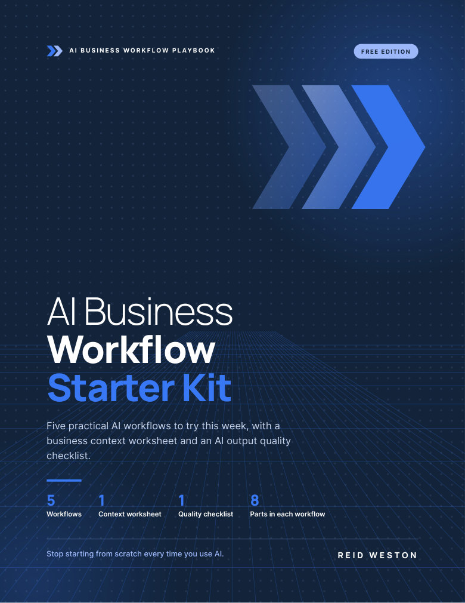
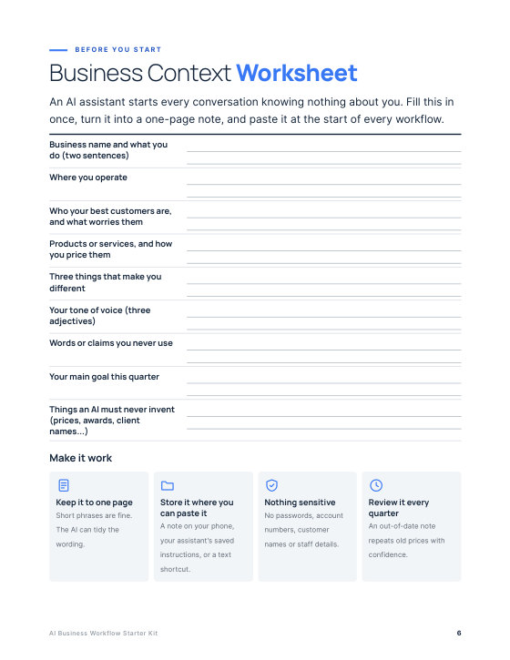
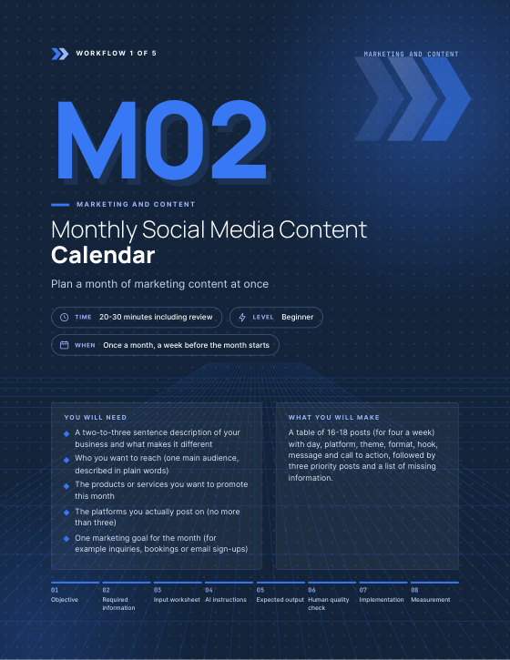
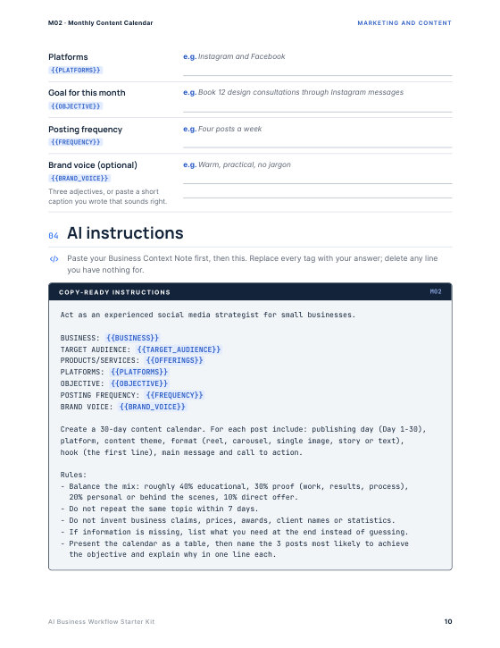
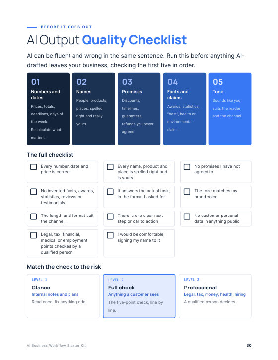

Free · for small business owners
Stop starting from scratch every time you use AI.
Five complete workflows from the AI Business Workflow Playbook, ready to try this week. Each one is a repeatable routine: a short worksheet, copy-ready instructions for your AI assistant, an illustration of a good result, and a checklist to run before anything goes out under your name. Plus a business context worksheet and an AI output quality checklist.
No email, no sign-up. Select the button and the PDF downloads.

The free download
Seven things that make AI answers sound like your business.
Most owners try an AI assistant, get one useful answer and one useless one, and go back to doing the job by hand. The difference is rarely the AI. It is what you gave it, what you asked for, and whether anyone checked the result.
Free · no email needed
AI Business Workflow Starter Kit
Five of the thirty workflows in the book, with the worksheet that makes every answer sound like you and the checklist that keeps AI mistakes from reaching a customer. Works with any AI assistant you already use.
Download (US Letter PDF) Download (A4 PDF)Monthly Content Calendar
Plan a month of social posts in one sitting.
Sales Proposal
A tailored proposal draft from your discovery notes.
Complaint Response
A calm, fair reply to an unhappy customer.
SOP Creation
A procedure anyone on your team can follow.
Weekly Planning
A realistic week built around your priorities.
Business Context Worksheet
One page you fill in once and paste at the start of every workflow.
AI Output Quality Checklist
The five-point check for numbers, names, promises, facts and tone.
Eight parts, every time
Objective, required information, worksheet, AI instructions, expected output, quality check, implementation, measurement.
Illustrated results
Each workflow shows the shape of a good answer. These are illustrations only; your assistant will word things differently.
Look inside
What a workflow looks like.
Every workflow uses the same layout, so once you have run one, the rest feel familiar.

Start hereBusiness Context Worksheet 
Each workflow opens withWhat you need, what you make 
Worksheet and instructionsCopy, replace the tags, run 
Before it goes outAI Output Quality Checklist
How to use it
Your first week with the kit.
Five short sessions. Each one leaves you with something you can use the same day.
- Day 1
Business Context Worksheet
Write the one page every workflow starts from.
- Day 2
P01 Weekly Planning
Turn your to-do list into a realistic week with a Big 3.
- Day 3
M02 Content Calendar
Plan next month's posts, then write the first week's captions.
- Day 4
C02 Complaint Response
Prepare it with your real policies now, before you need it.
- Day 5
S02 or A02
Draft your next proposal, or write down the task you explain most.
The full playbook
30 Practical AI Workflows for Small Business Owners
This kit is five of the thirty workflows in the AI Business Workflow Playbook paperback, with worksheets, copy-ready AI instructions and quality checks for the work small businesses repeat.
- 30 workflows across marketing, sales, customer service, administration, research and planning
- 10 printable worksheets and the same eight-part layout every time
- Six short chapters on choosing tasks, writing your business context note, picking an assistant and checking AI output
- A 30-day plan, troubleshooting and a glossary